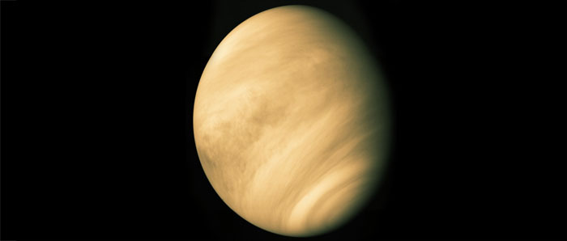

Vénus
Deuxième planète du système solaire, Vénus est celle qui est la plus proche de la Terre. C'est aussi l'objet le plus brillant du ciel, après le Soleil et la Lune. De la Terre, elle apparaît comme une étoile brillante se manifestant à l'ouest après le coucher du Soleil (l'étoile du Berger) ou à l'est juste avant son lever (l'étoile du Matin). Elle présente des phases semblables à celles de la Lune.
Vénus décrit une orbite presque circulaire, distante d'environ 108 200 000 km du Soleil, sa période de révolution étant de 225 jours. Elle tourne lentement sur elle-même, accomplissant une rotation en 243 jours, la durée d'une journée étant donc supérieure à celle d'une année. Cette rotation s'effectue d'est en ouest, en sens inverse de celle du Soleil et des autres planètes. Vénus n'a pas de satellite.
Elle est à peu près de même taille que la Terre, avec un diamètre de 12 104 km, mais possède un climat très différent. Sa température de surface est d'environ 464 °C, car son atmosphère constituée d'épais nuages, riche en gaz carbonique, emprisonne la chaleur du Soleil. Sa pression atmosphérique surperficielle est 90 fois plus élevée que celle de la Terre.

Source : Lien
Vue de l'espace, Vénus apparaît comme un objet très brillant, la lumière solaire étant presque entièrement réfléchie par son épais manteau nuageux. Son atmosphère, très dense, se répartit jusqu'à 100 km au-dessus de sa surface. Elle est essentiellement composée de gaz carbonique mais renferme aussi de l'azote, de l'oxygène, de l'acide sulfurique et de la vapeur d'eau, en faibles quantités. Ses nuages, formés de particules solides et liquides de soufre et d'acide
sulfurique, rendent très difficile l'exploration de sa surface. Sous ce manteau nuageux, au-dessous de 40 km d'altitude, l'atmosphère devient limpide. La luminosité correspond à peu près à celle d'une pâle journée hivernale de l'hémisphère Nord sur Terre. Les nuages ne laissent passer qu'environ 2% de la lumière solaire.
Près de la surface de Vénus, les vents sont très faibles et l'atmosphère dense ne se déplace que très lentement. Par contre, dans la partie supérieure de son atmosphère, des vents est-ouest atteignant 250 km/h balaient tous les 4 jours le sommet des nuages. Ces vents rapides sont engendrés par l'accumulation du rayonnement solaire à la surface de la couverture nuageuse.
Plan du site | Contact | Site réalisé par Mathieu Morainville.